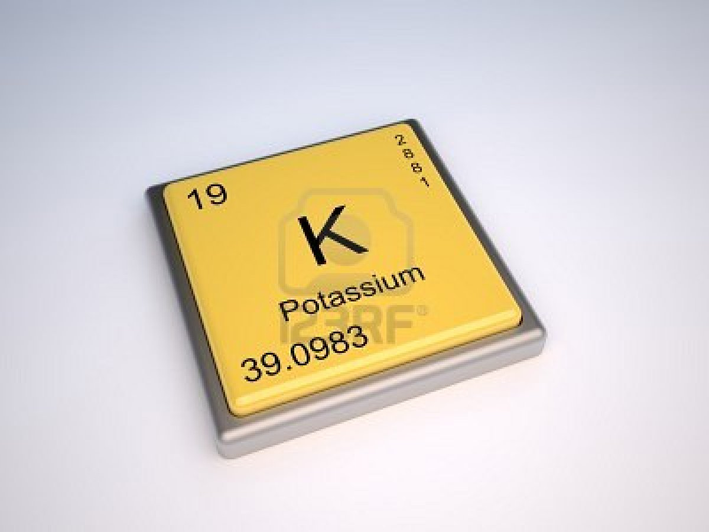

POTASIO:

Es el quinto metal más ligero y liviano; es un sólido blando que se corta con facilidad con un cuchillo, tiene un punto de fusión muy bajo, arde con llama violeta y presenta un color plateado en las superficies no expuestas al aire, en cuyo contacto se oxida con rapidez, lo que obliga a almacenarlo recubierto de aceite.
Al igual que otros metales alcalinos reacciona violentamente con el agua desprendiendo hidrógeno, incluso puede inflamarse espontáneamente en presencia de agua.
 Ir a página principal
Ir a página principal